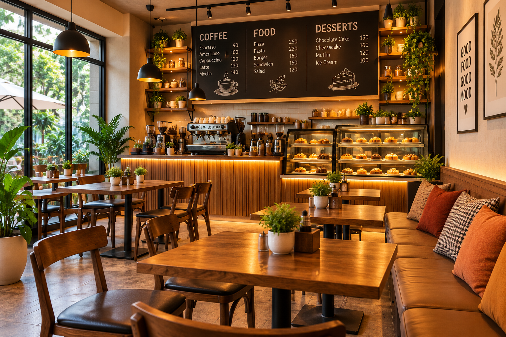
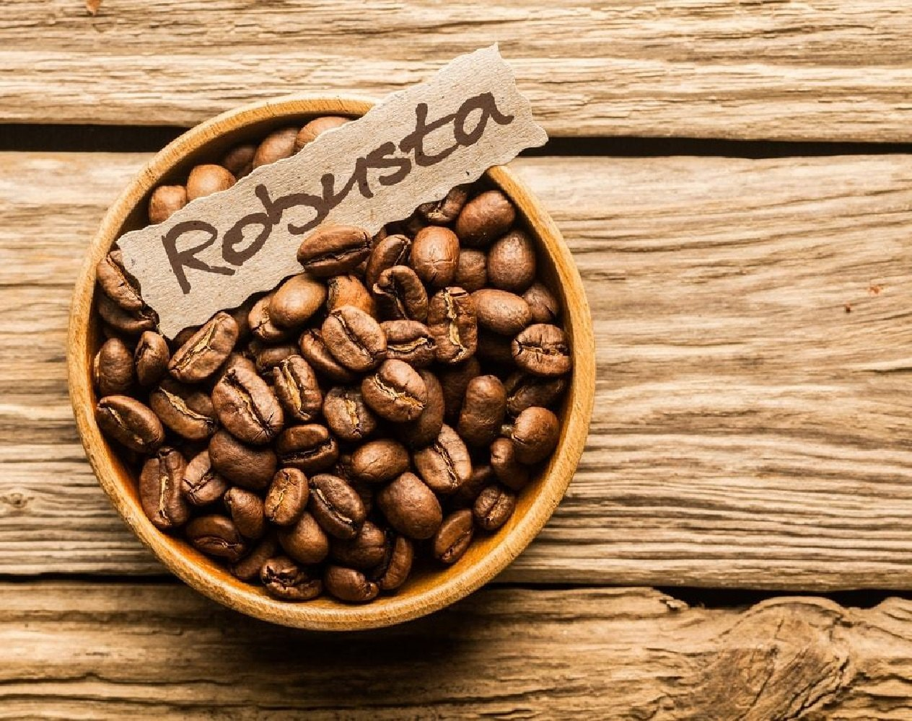
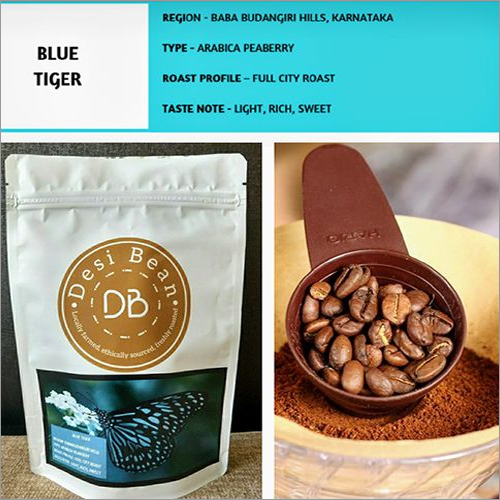

Head Chef
Chef GURU
Leads the kitchen and develops our seasonal menu, bringing together fresh ingredients and inventive fusion flavors.
Serving up local energy, innovative fusion flavors, and precision-brewed specialty coffee.
Explore the Menu
Sidamo Atelier brings together carefully brewed espresso, crisp seasonal salads, and creative fusion dishes in a lively neighborhood setting.
Drop in for a bright, fresh bowl or discover an unexpected flavor combination. Our menu is made for good coffee, bold bites, and easygoing time together.
The people behind our fresh plates and creative cafe favorites.
Head Chef
Leads the kitchen and develops our seasonal menu, bringing together fresh ingredients and inventive fusion flavors.
Sous Chef
Coordinates daily service and helps every salad, pastry and hot dish leave the kitchen beautifully prepared.
A little about the beans and coffee-growing country behind every cup.
The aromatic bean
Arabica beans are often prized for a fragrant aroma and nuanced, smooth flavor. They are commonly grown at higher elevations and can show fruity or floral notes.

The bold bean
Robusta beans tend to make a fuller-bodied, stronger-tasting cup with more caffeine. They are often used in espresso blends for depth and a rich crema.

Coffee-growing region
Chikkamagaluru, also known as Chikmagalur, is one of India's well-known coffee-growing regions, with estates cultivating Arabica and Robusta among the Western Ghats.
| Days | Opening Time | Closing Time |
|---|---|---|
| Monday - Friday | 9:00 AM | 10:00 PM |
| Saturday | 10:00 AM | 11:00 PM |
| Sunday | 10:00 AM | 10:00 PM |